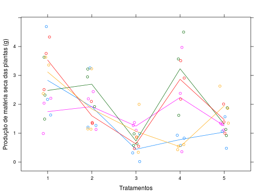

Experimento em DIC que estudou a produção de matéria seca em plantas de arroz, em gramas. No experimento foram utilizados cinco vasos para cada um de quatro tratamentos e três plantas para cada vaso (parcela).
Um data.frame com 75 observações e 4 variáveis, em que
soloplantavasoprodZIMMERMANN (2004), Table 3.12, pág. 62.
library(lattice) data(ZimmermannTb3.12)#> Warning: data set ‘ZimmermannTb3.12’ not foundstr(ZimmermannTb3.12)#> 'data.frame': 75 obs. of 4 variables: #> $ solo : Factor w/ 5 levels "1","2","3","4",..: 1 2 3 4 5 1 2 3 4 5 ... #> $ planta: num 1 1 1 1 1 2 2 2 2 2 ... #> $ vaso : num 1 1 1 1 1 1 1 1 1 1 ... #> $ prod : num 2.17 3.26 0.99 0.83 1.57 1.63 1.27 0.32 0.93 1.07 ...xtabs(~solo + vaso, data = ZimmermannTb3.12)#> vaso #> solo 1 2 3 4 5 #> 1 3 3 3 3 3 #> 2 3 3 3 3 3 #> 3 3 3 3 3 3 #> 4 3 3 3 3 3 #> 5 3 3 3 3 3aggregate(prod ~ solo, data = ZimmermannTb3.12, FUN = function(x) { c(mean = mean(x), var = var(x)) })#> solo prod.mean prod.var #> 1 1 2.7420000 1.1899029 #> 2 2 1.9946667 0.7103981 #> 3 3 0.8240000 0.2457114 #> 4 4 1.9286667 2.1191552 #> 5 5 1.4033333 0.2766810xyplot(prod ~ solo, groups = vaso, data = ZimmermannTb3.12, type = c("p", "a"), jitter.x = TRUE, xlab = "Tratamentos", ylab = "Produção de matéria seca das plantas (g)")